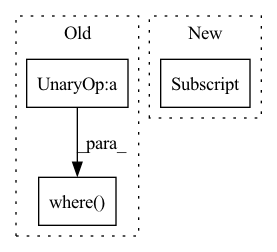

Pattern ID :1574
Before Change
p = p[torch.arange(p.shape[0]), target]
// Adapt formula as p is in log-scale
loss = torch.where(
p <= math.log(1 / self.tau),
-self.tau * torch.exp(p) + math.log(self.tau) + 1,
-p ,
)
return torch.mean(loss)
After Change
loss = torch.empty_like(p)
clip = (p <= 1 / self.tau)
loss[clip] = -self.tau * p[clip] + math.log(self.tau) + 1
loss[~clip] = -torch.log(p[~clip])
return torch.mean(loss)In pattern: SUPERPATTERN
Frequency: 3
Non-data size: 3
Instances Fragment ID: 5407195
Project Name: dmizr/phuber
Commit Name: 5a1fc62fd9e391b9d996cdfccd891202fa296e9d
Time: 2020-12-01
Author: david.mizrahi@epfl.ch
File Name: phuber/loss.py
M Class Name: PHuberCrossEntropy
N Class Name: PHuberCrossEntropy
M Method Name: forward(3)
N Method Name: forward(3)
M Parent Class: nn.Module
N Parent Class: nn.Module
M File Name: phuber/loss.py
N File Name: phuber/loss.py
M Start Line: 30
M End Line: 37
N Start Line: 52
N End Line: 57
Before Change
pids = torch.FloatTensor(np.arange(len(anchor))).to(anchor.device)
dists = cdist(anchor, positive, metric=self.metric)
// add 10 to false negative
dist_keypts = np.eye(dist_keypts.shape[0]) * 10 + dist_keypts.detach().cpu().numpy()
add_matrix = torch.zeros_like(dists)
add_matrix[np.where( dist_keypts < self.safe_radius) ] += 10
dists = dists + add_matrix
pos_mask = torch.eq(torch.unsqueeze(pids, dim=1), torch.unsqueeze(pids, dim=0))After Change
// pos = dists + 1e5 * (~pos_mask).float()
pos = furthest_positive[:, None]
pos_weight = (self.pos_optimal - pos).detach()
pos_weight = torch.max(torch.zeros_like(pos_weight), pos_weight)
lse_positive = torch.logsumexp(-self.log_scale * (pos - self.pos_margin) * pos_weight, dim=-1)
Fragment ID: 5407204
Project Name: xuyangbai/d3feat.pytorch
Commit Name: f19b93196387b22f1cb416f9a0214b2cffaf8e5e
Time: 2020-07-16
Author: 653823597@qq.com
File Name: utils/loss.py
M Class Name: CircleLoss
N Class Name: CircleLoss
M Method Name: forward(4)
N Method Name: forward(4)
M Parent Class: nn.Module
N Parent Class: nn.Module
M File Name: utils/loss.py
N File Name: utils/loss.py
M Start Line: 123
M End Line: 152
N Start Line: 125
N End Line: 157
Before Change
def forward(self, x, target):
eps = np.finfo(float).eps
p_t = torch.where(target == 1, x, 1-x)
fl = - 1 * (1 - p_t) ** self.gamma * torch.log(p_t + eps)
fl = torch.where( target == 1, fl * self.alpha, fl * (1 - self.alpha))
return self._reduce(fl)
def _reduce(self, x):
if self.reduction == "mean":After Change
def forward(self, x: Tensor, target: Tensor) -> Tensor:
mask = target == self.ignore_index
x = self._process_preds(x)
num_classes = x.shape[-1]
target = self._process_target(target, num_classes)
pt = self._calc_pt(target, x, mask)
focal = 1 - pt
nll = -torch.log(self.eps + pt) Fragment ID: 5407198
Project Name: mathiaszinnen/focal_loss_torch
Commit Name: b178639bc64ed65ba7e8428a8d6be2a9517f4abf
Time: 2022-10-11
Author: mahmoud@salhab.work
File Name: focal_loss/focal_loss.py
M Class Name: FocalLoss
N Class Name: FocalLoss
M Method Name: forward(3)
N Method Name: forward(3)
M Parent Class: nn.Module
N Parent Class: nn.Module
M File Name: focal_loss/focal_loss.py
N File Name: focal_loss/focal_loss.py
M Start Line: 40
M End Line: 45
N Start Line: 48
N End Line: 58